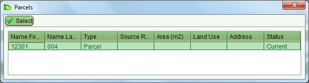
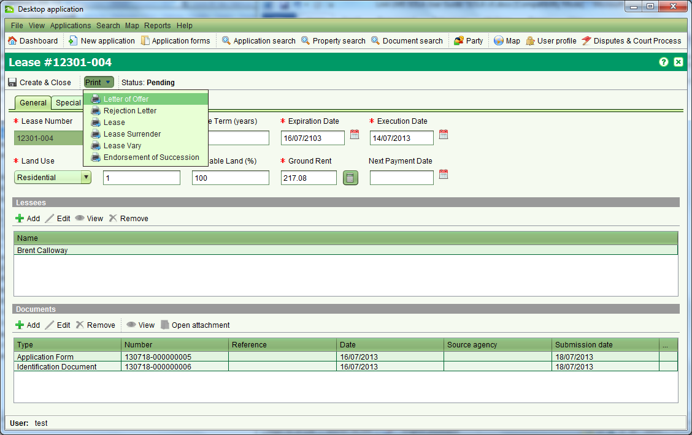
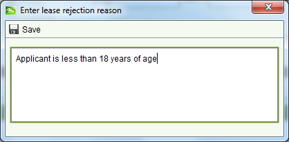

Lease Services Manager Review
Before the Letter of Offer and Lease can be sent to the lessee(s), the new lease details must be checked by the Lease Services Manager. The Lease Services Manager will:
- Using the Dashboard,
 Assign the application to themselves and
Assign the application to themselves and
 Open it.
Open it. - Assess all documentation provided for the Grant of New Lease application and determine if all details are in order. If so..
- From the Services tab,
 Start the Grant of New Lease service
Start the Grant of New Lease service - From the Rights / Restrictions tab, select the new pending lease right and click the
 action.
action. - Check the details recorded for the lease match the documentation provided. If not, the Lease Services Manager can either reassign the application back to the staff member that recorded the lease details or correct the lease details themselves. If the Lease Services Manager makes changes to the lease details they should reprint the Letter of Offer and Lease notices.
- If everything is in order,
 Save & Close the Lease Details screen.
Save & Close the Lease Details screen. - The Property Details screen will show the new pending Lease right
with the new lessee details. Note: If you need to make further changes
to the lease information, select the pending lease and click the
Edit tool. If you need to remove the pending lease details completely, use the
 tool.
tool. -
Save the Property Details screen and close.
 Complete the Grant of New Lease service from the Services tab of
Application Details and close the application.
Complete the Grant of New Lease service from the Services tab of
Application Details and close the application.  Unassign the application so that it can be re-assigned to LAA Registration
Services once the lessee(s) have signed the lease documents and paid
the necessary fees.
Unassign the application so that it can be re-assigned to LAA Registration
Services once the lessee(s) have signed the lease documents and paid
the necessary fees. - 11. Place the Letter of Offer and Lease notices in the Director of Leasing’s inbox for them to sign and forward to the lessee(s).
Rejecting a Lease Grant
In some situations it may be necessary to reject the grant for a new lease (e.g. lessee under 18, invalid certificates, etc.). Where you have determined the lease must be rejected
- On the Services tab,
Start the Grant of New Lease service
- On the Plot tab, choose
 Select from application to open the Plot Selection dialog
Select from application to open the Plot Selection dialog - In the Plot Selection dialog,
Select the plot that will be used for the lease. If the plot you require
for the lease is not displayed in the Plot Selection dialog, you can use the
 Search on the Plot tab to locate the appropriate plot instead.
Search on the Plot tab to locate the appropriate plot instead. - On the Rights / Restrictions tab, choose the
 Create action. This will open the Lease Details screen.
Create action. This will open the Lease Details screen. - Use the Print dropdown and select the Rejection Letter menu option
- Enter the reason for rejecting the application in the Rejection Reason dialog and click
Save
- The Rejection Letter will be generated. Save a PDF copy of the letter and print a hard copy of letter.
- Close the Lease Details screen without saving.
- Close the Property Details screen without saving.
- On the Application Details screen, go to the Document tab and
Add a new document attaching the PDF copy of the Rejection Letter.
-
Save the Application Details screen and close.
- From the Dashboard, select the application in the Assigned applications list and click the
Unassign tool. This will remove you as the assigned user and display
the application in the Unassigned applications list.
- Notify the Lease Services Manager that the application should be

The Lease Services Manager will:
- Using the Dashboard,
Assign the application to themselves and
Open it.
- Assess all documentation provided for the Grant of New Lease application and determine if all the rejection is justified. If so…
- From the Application Details screen, use the Application action drop down to Cancel the application. Cancellation of the application is required in case there is a subsequent request to grant a lease over the same plot.
-
Unassign the application so that it can be re-assigned to LAA Registration Services
once the lessee(s) have signed the lease documents and paid the necessary fees.
If the Lease Services Manager determines that rejection of the application
is not justified, they can
Remove the Rejection Letter from the Documents tab of the Application
Details screen and reassign the application back to the Lease Services
staff member to continue capture of the lease details.